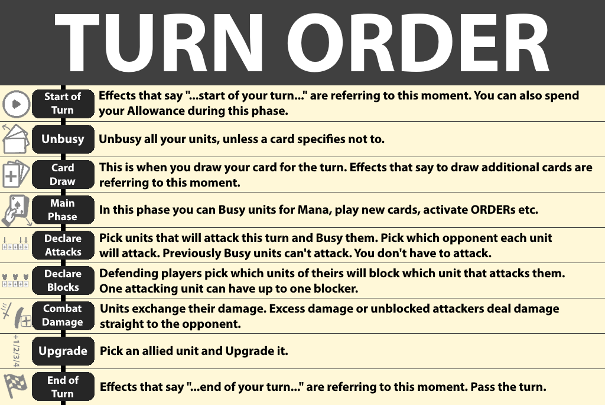

Rules & Introduction
About the Game
FNOLDREC is a game about assembling a team using it's members' wits and fame. In this game, you choose your operator, and using that character along with a 60-card deck, you try to defeat your opponents.
Info
Name: FNOLDREC
Players: 2-4
Playtime: 1h-3h
Age Rating: 12+
Content Descriptions:
- Violence
- Fear
- Bad language
- Depictions of tobacco usage
Author: Fnold
Before Playing
To start the game, each player must have a deck prepared consisting of at least 60 cards and a selected operator. Decks may contain any cards from the game and may have up to 100 cards. However, the "50:50 rule" applies: each deck must have exactly as many actions as it has units, and vice versa. An operator can be any unit with a large text box. You can include regular units, grays, and operators in your deck, provided that the operators do not have a star in their unit types and share the same color combination as the main operator.
Play
Each player places their deck face down and shuffles it. Next to their deck, each player places their previosuly picked operator face up. Set each player's life to 100/100. Randomly choose the starting player.
Next, each player draws 7 cards. If the hand drawn is unsatisfactory, a player can pick any number of cards from their hand and draw that many new cards and then shuffle the previously picked cards back into the deck. A player can only do this once.
Each player's first turn is very important. During the first turn of the game, special rules apply. During a player's first turn, that player can't attack, doesn't draw a card at the beginning of turn, can't play their operator and can't play cards with the Attaint keyword. During your first turn you have to play a unit. The first unit played by each player is completely free.
During the turn, the active player may Busy their units, which means rotating them 90 degrees to generate as much Mana as that unit's Intelligence (the lightbulb icon in the unit's stats). A unit generates as much Fame passively as its Fame stat (the bar graph in the unit's stats). Mana and Fame are needed to play most of the cards in the game. To play a card, which includes your operator, you must meet its playing costs; if you succeed, you can play it from your hand onto the table, while simultaneously depleting each resource by the amount that the card cost (e.g., Mana, Coins, Life), except for Fame. Fame never drains. Every time you play your operator, each of it's playing costs increases by 2. If you can't afford to play any other card from your hand besides your starting unit, there's no need to worry! At the end of each turn, the player whose turn it is picks one of their units and increases a selected stat by 1. That is called Upgrading a unit. Degrading is the same but you lower a stat by 1. The turn then ends.
Starting on the second turn and every turn thereafter, each player, at the beginning of their turn, Unbusies all of their units (returns them to an upright position), draws 1 card, may attack other players and may play their operator. Attacking involves Busying individual Unbusy units of your own during your turn. For each unit, you select an opponent to attack. Then, each opponent being attacked must choose to either block the attack or lose life equal to the sum of the strength of all units attacking that enemy (the sword icon in the unit's stats). To block an attack, the attacked player picks one of their Unbusy units and assigns it to the attacking unit. They may do this as many times as they wish; one unit can block one attacking unit. Afterward, each blocking unit loses as much health as the attacking unit's strength. If there is excess damage, the defending player loses as much life as the excess damage amount. The defending player loses as much health as the strength of the unblocked units attacking them.
Each turn goes in compliance with the "TURN ORDER" infographic:

Each action has a "tempo" below it's image:
- FLASH - Effect of this action activates instantly after playing.
- ROZKAZ - The effect of this action doesn't take effect during the same turn it was played (unless it has the Hustle keyword), but it can be activated at any time during any future turn of the player who has the action. Actions with this timing may have charges. These allow you to use the action's effect multiple times. Charges work according to the ORDER rules. You can even use all charges in succession during a single turn. When the number of charges reaches 0, nothing happens; the card remains on the table.
- PLAN - These actions have effects that unlock and activate each time the action described at the beginning of the card's description is performed. When played, the card is at level 0. After the final level is completed, the action goes to the graveyard.
- TRAP - These actions are played face down, hidden from other players. The player who has this action can peek under it whenever they want. When the TRAP triggers, it's turned face up and it's effect triggers. Then it goes to the graveyard.
Actions without a tempo are permanent and stay on the table unless someone gets rid of them.
Finishing the Game
The game ends when one player wins using cards that say they can win OR when every other player has lost the game.
You win instantly when:
- You're the only player alive
OR
- One of the cards says that you win the game
You lose instantly when:
- You have 0 units
OR
- You have 0 or less life
OR
- One of the cards says that you lose the game
When someone wins the game, the match ends immediately. When someone loses the game, it continues until someone wins.